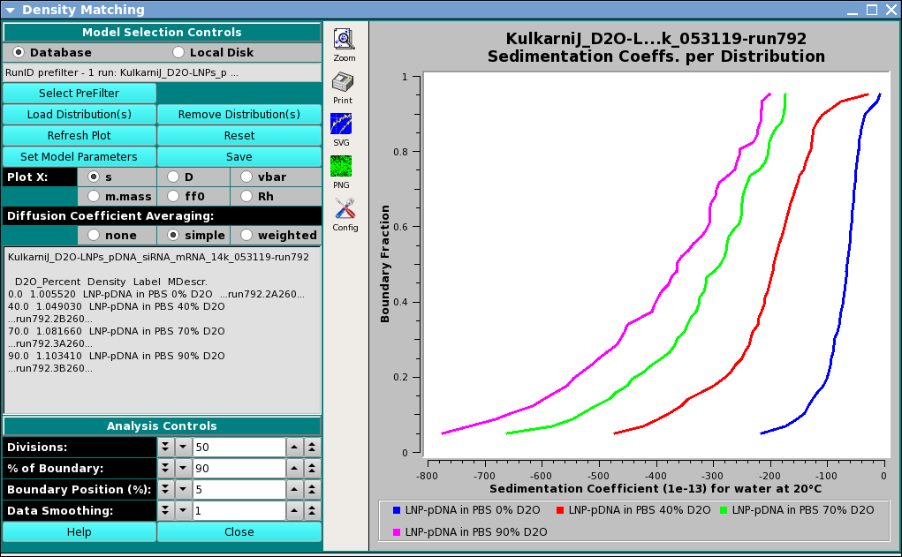

UltraScan Density Matching:
Density Matching experiments are used to determine the partial specific
volume of colloidal particles by repeating the velocity experiment in a
range of buffers with a different density, but identical chemical
properties. Here it is important that the ionic strength and pH stay
constant. This is most easily accomplished by using D2O (heavy water)
which has mostly the same chemical properties as light water. The change
in buoyancy incurred when changing the density of the solvent causes a
change in sedimentation speed, which can be measured. The change is
proportional to the density of the analyte. Density matching experiments
exploit this difference.
It is recommended that users of this technique measure sedimentation
velocity experiments in 4-6 different D2O concentrations, including one
buffer that does not have any D2O in it (just light water). Finite
element models from these experiments are imported into this program
to elucidate the partial specific volume distribution for the entire
solution mixture.
Main Window:

Dialog Items:
-
Database: Select to choose models from the database.
-
Local Disk: Select to choose models from files on the
local disk.
-
(prefilter text): Brief information about PreFilter
selection(s) made.
-
Select PreFilter: Open a
Models Pre-Filter dialog
to select Run IDs on which to pre-filter lists of models
for loading.
-
Load Distribution(s): Load model distribution data
to use in density matching, as specified through a
Model Loader dialog
-
Remove Distribution(s): Open a
Remove Models dialog
to pare down the list of selected models.
-
Refresh Plot: Force a re-plot of the currently selected
plot type.
-
Reset: Clear PreFilter and Distribution selection data.
-
Set Model Parameters: Open a
Model Parameters dialog
to associate D20_Percent, Density, Label values with each model.
-
Save: Generate CSV spreadsheet files and PNG plot files
for all plot types and save them locally to a runID subdirectory
of the */ultrascan/reports directory.
-
Plot X: Select the plot to currently be displayed by
selecting its X axis:
- s Sedimentation coefficient.
- D Diffusion coefficient.
- vbar Partial specific volume.
- m.mass Molar Mass.
- ff0 Frictional ratio.
- Rh Hydrodynamic radius.
-
Diffusion Coefficient Averaging: Select the means of averaging
diffusion coefficients at each boundary fraction, across models:
- none No averaging (maintain individual model D values).
- simple Simple averaging.
- weighted Weighted averaging, using concentrations.
-
(Distribution Information text box) Information about Run and
Model Distributions currently being used.
-
Divisions: Set the number of boundary fraction divisions to use.
-
% of Boundary: Set the extent in boundary percent over which
plot values are computed and plotted.
-
Boundary Position (%): Set the starting boundary percent.
-
Data Smoothing: Set the number of smoothing points to use
in curves displayed.
-
Help Display this documentation.
-
Close Exit the application.
 Manual
Manual